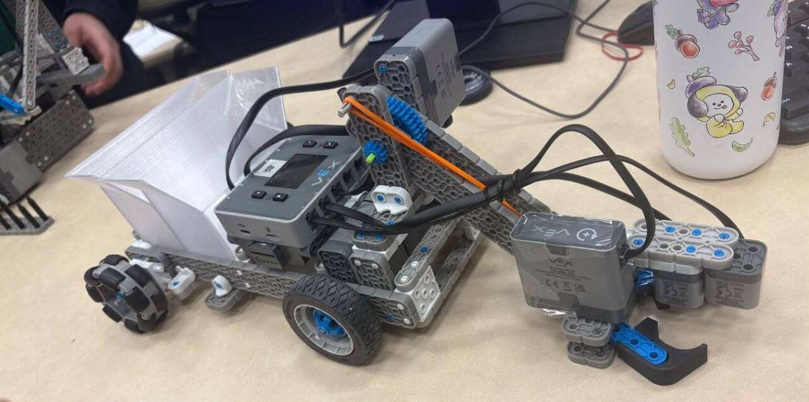

V8 Engine Design & Assembly

Plant It — Antweight Combat Robot

VEX Group Project

This is my Engineering Portfolio.
I'm a second-year Mechatronics Engineering student at the University of Waterloo. I grew up in India, and moving to Canada for university has been one of the biggest shifts of my life so far. It pushed me to adapt fast, be more independent, and get comfortable with the unfamiliar. I love learning new things, whether that's a technical skill or just how a new place works, and I enjoy meeting people with completely different backgrounds from mine.
That same adaptability is a big part of how I approach engineering. I like jumping into unfamiliar problems, figuring out how systems work, and iterating until something actually works well. Outside of coursework, I'm always looking for projects that let me build something real and learn by doing.

We Accelerate — Prototyped a chatbot for an industry client by feeding Claude (Anthropic) detailed instructions covering both frontend and backend requirements. After the program ended, continued working with the client independently to deliver a fully functional product, now developing the backend from scratch in VS Code with Claude as a coding assistant.
Engineering Society — Currently holding multiple director roles including EDI Improvement, Mental Health Resources & Academic Rep Director, and Wellness Events Director. Planning and organizing a 3-day first-year engineering conference from the ground up, including a case competition and a panelist lineup.
Watbots — Built "Plant It," an antweight combat robot, and competed at "The Wreckage" at REX, a competition hosted by BotBrawl and Joto Events.
WUSA Special Events Team — Currently supporting setup, teardown, and check-ins across events organized by WUSA.
Email: m6nayyar@uwaterloo.ca